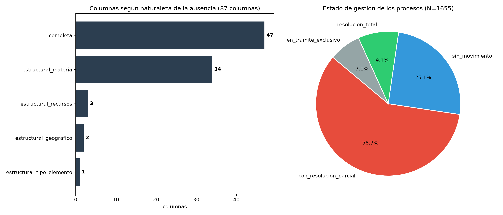
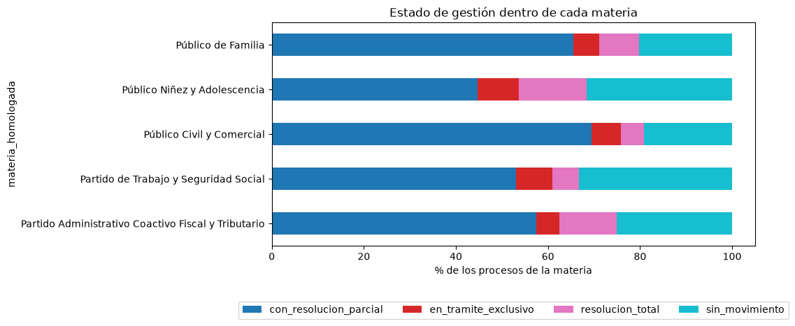
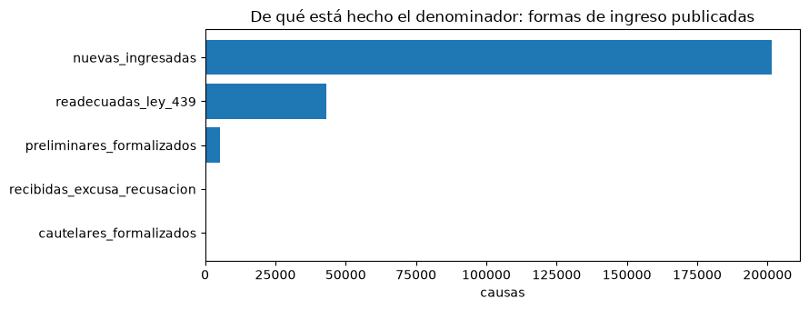
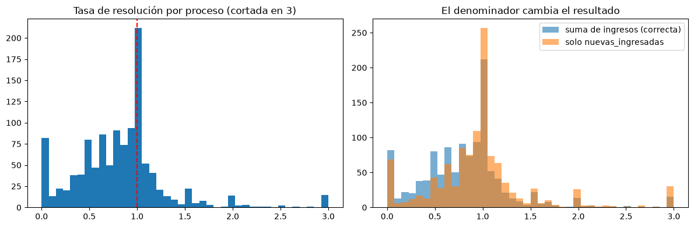
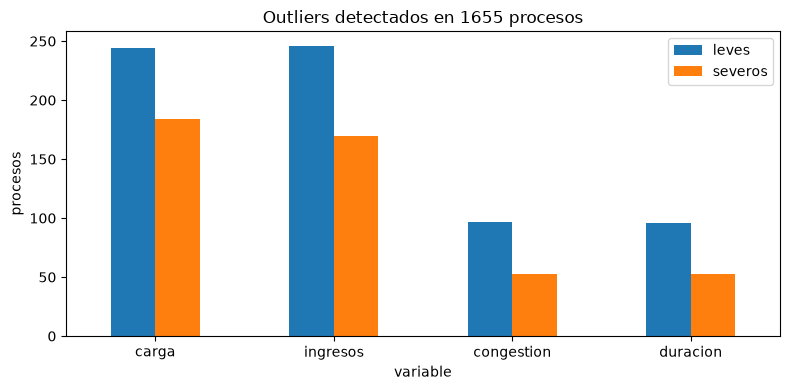
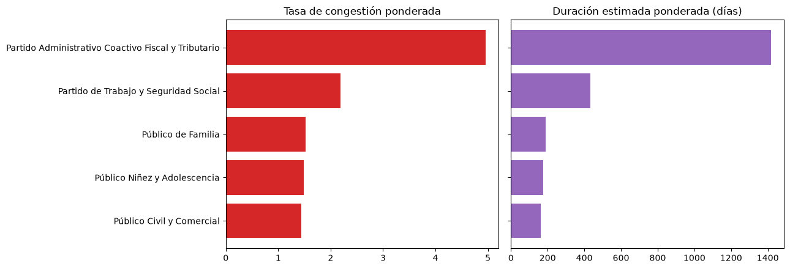
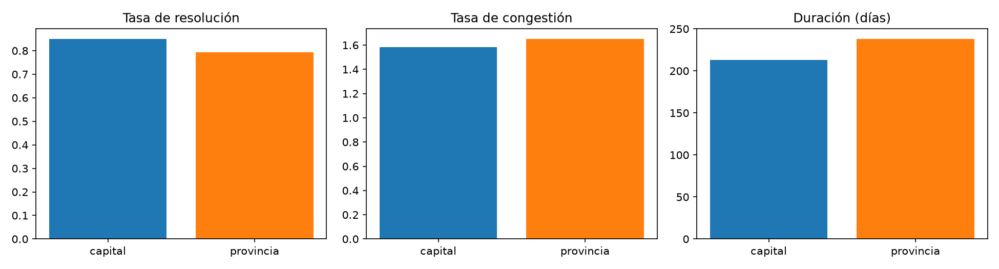
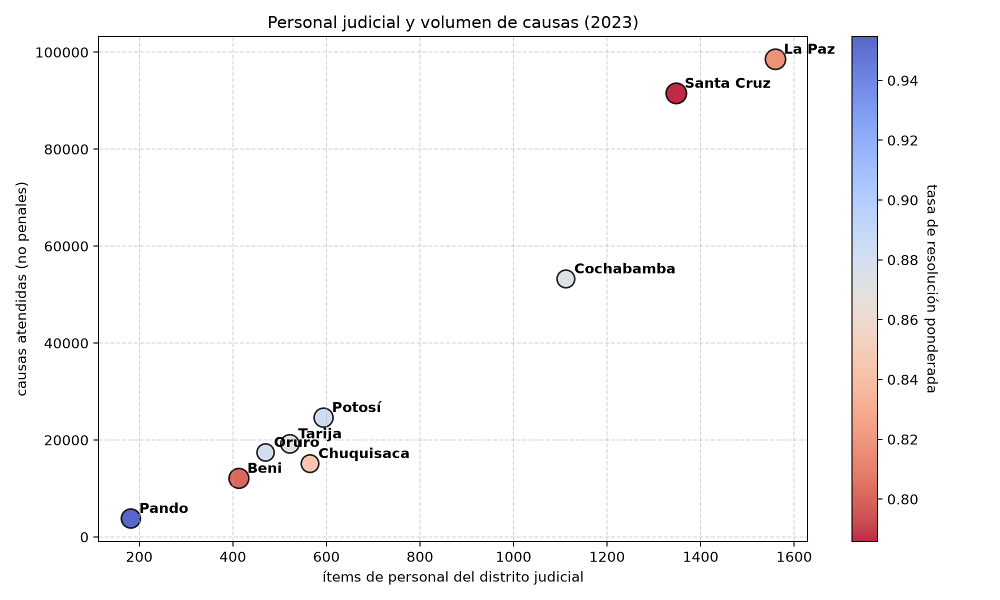
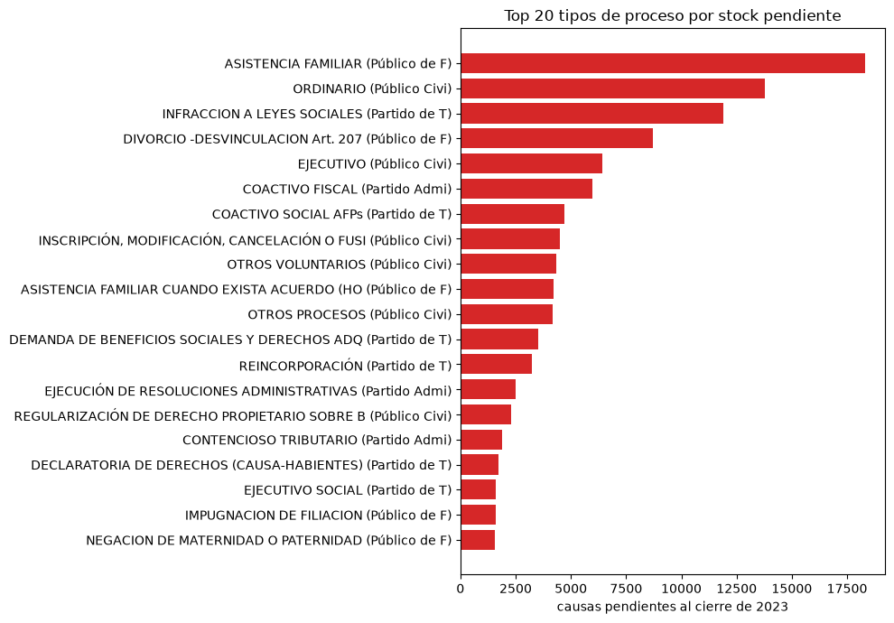

Resultados · 10
EDA e indicadores
EDA es Exploratory Data Analysis, análisis exploratorio: describir qué hay, cómo se distribuye, dónde están los valores raros y qué falta, antes de modelar nada. Esta página explica cómo se hizo cada paso y qué dicen los resultados.
El análisis cubre el estrato tipo_elemento_analitico == "proceso": 1.655 de las 1.997 filas de la tabla analítica y 335.472 de las 706.485 causas atendidas (47,5 %). Ese estrato contiene solo las materias no penales: civil y comercial, familia, niñez y adolescencia, trabajo y coactivo fiscal.
Las ocho materias penales quedan fuera porque sus cuadros publican otras columnas (sobreseimiento, imputación formal, terminación anticipada…) y no publican causas resueltas: las fórmulas del CEJA no se les pueden aplicar tal cual. Ninguna cifra de esta página es «el sistema judicial boliviano»: es su mitad no penal.
La regla: nada se sobrescribe ni se borra
Cada paso agrega columnas y deja intactas las anteriores. No se imputa un vacío, no se elimina un valor extremo, no se pisa un valor con su versión transformada. En estos datos el valor raro suele ser el hallazgo: un juzgado con congestión 15 no es un error de carga, es un juzgado desbordado, que es justamente lo que se quiere encontrar.
| Paso | Columnas | Filas | Agrega |
|---|---|---|---|
| 08 · integración | 87 | 1.997 | punto de partida |
| 09 · nulos y estados | 88 | 1.997 | estado_gestion |
| 10 · indicadores | 100 | 1.997 | 12 indicadores y banderas |
| 11 · outliers | 115 | 1.997 | 8 banderas, 2 winsorizadas, 5 logaritmos |
Paso 09 · Los vacíos no son todos iguales
Un vacío puede significar cosas muy distintas, y tratarlas igual es un error clásico. El notebook 09 clasifica cada una de las 87 columnas según por qué le faltan valores:
| Categoría | Columnas | Qué significa el vacío |
|---|---|---|
completa | 47 | no hay vacíos |
estructural_materia | 34 | la columna es de otra materia. readecuadas_ley_439 existe por el Código Procesal Civil: una causa de familia no puede tenerla. «Sobreseimiento» es penal: en un divorcio no existe |
estructural_recursos | 3 | el Anuario deja en blanco las salas o tribunales que no existen en esa localidad |
estructural_geografico | 2 | ciudad solo en capitales, distrito solo en provincias |
estructural_tipo_elemento | 1 | resueltas está vacía solo en las 342 filas que no son procesos |
Ninguna columna cae en «ausencia sin explicación»: todos los vacíos se explican por la estructura de la fuente. Por eso no se imputa nada: rellenar con el promedio un «sobreseimiento» de una causa civil sería inventar una figura jurídica que no puede existir.

El estado de gestión de cada proceso
| Estado | Procesos | % | Significa |
|---|---|---|---|
con_resolucion_parcial | 972 | 58,7 | resolvió algo, pero menos de lo que atendió: lo normal |
sin_movimiento | 415 | 25,1 | cero causas atendidas en el año |
resolucion_total | 150 | 9,1 | resolvió todo lo que atendió |
en_tramite_exclusivo | 118 | 7,1 | atendió causas y no resolvió ninguna |
Los dos extremos condicionan el paso siguiente: con cero atendidas, toda tasa que divida por atendidas es indefinida; con cero resueltas, la congestión y la duración son indefinidas. En esos casos el indicador queda vacío, no se inventa un valor.


El único descuadre
De las 1.655 filas procesales, 1.654 cumplen atendidas = resueltas + pendientes_fin. La que no: cuadro 5.2.2.1, página 334, Oruro, CONTENCIOSO TRIBUTARIO, con 223 atendidas, 13 resueltas y 0 pendientes. Faltan 210 causas que la propia fuente no ubica. No se corrige: es una discrepancia del Anuario, y hay que tenerla presente porque esa celda es justamente la que domina el mapa de calor de congestión.
Paso 10 · Los indicadores
| Columna | Fórmula | Se lee |
|---|---|---|
ingresos_totales | suma de las 8 formas de ingreso | la verdadera «ingresadas» |
tasa_resolucion | resueltas ÷ ingresos_totales | > 1 descarga acumulado; < 1 acumula mora |
tasa_congestion | atendidas ÷ resueltas | causas gestionadas por cada una cerrada |
tasa_pendencia | pendientes_fin ÷ atendidas | parte de lo gestionado que quedó abierta |
duracion_estimada_dias | pendientes_fin ÷ resueltas × 365 | días para vaciar el stock al ritmo de 2023 |
acumulacion_neta_anual | ingresos_totales − resueltas | cuánto creció el stock en el año |
Más tres banderas: flag_acumula_mora (747 procesos, 45,1 %), flag_sin_resolucion_anual (118) y flag_sin_movimiento (415), y dos cargas relativas: causas por ítem de personal del distrito y por juzgado publicado del territorio.
Procesos ordinarios civiles de Sucre (cuadro 5.1.1.1, página 121): 770 causas readecuadas, 1.424 nuevas y otras formas de ingreso, 2.397 atendidas en total, 1.286 resueltas, 1.111 pendientes al cierre. ingresos_totales = 2.397 (en civil no se publica el stock inicial); tasa de resolución 1.286 ÷ 2.397 = 0,537; congestión 2.397 ÷ 1.286 = 1,86; duración 1.111 ÷ 1.286 × 365 = 315 días. flag_acumula_mora = True. Y se puede verificar abriendo el PDF en la página 121.
El denominador
ingresadas no es nuevas_ingresadas. En el estrato analizado:
El notebook 10 se detiene si la suma no reproduce atendidas − pendientes_inicio en cada proceso. Resultado: cero descuadres en las 1.180 filas comparables. Usar solo nuevas_ingresadas daría 103,84 % en vez de 83,39 %: la conclusión opuesta. Es el error que el proyecto cometió y corrigió: ver decisiones y errores.


En los cuadros civiles el Anuario publicó readecuadas_ley_439 en lugar del stock inicial, así que pendientes_inicio está vacío en las 475 filas civiles. Consecuencia aritmética: en civil, ingresos_totales == atendidas, y la tasa de resolución colapsa en resueltas ÷ atendidas (0,69), que es la fórmula de pct_resueltas, no la del CEJA. Hay que declararlo cada vez que se comparen materias.
Paso 11 · Outliers sin borrar nada
El método IQR (rango intercuartílico)
Se ordenan los valores y se toma el que deja el 25 % por debajo (Q1) y el que deja el 75 % (Q3). La distancia entre ambos es el IQR. Es outlier leve lo que supera Q3 + 1,5 × IQR y severo lo que supera Q3 + 3 × IQR. Es la regla de Tukey, el estándar de los diagramas de caja. Si el IQR es cero (casi todos los valores iguales), el límite se fija en el máximo entre Q3 + 1 y el percentil 95, para no marcar como raro cualquier valor distinto.
¿Por qué estratificado?
Sobre el total, el umbral de carga daría unas 195 causas: un juzgado civil de Santa Cruz lo supera sin tener nada de excepcional y uno de Pando no lo alcanza nunca. Se estaría marcando «capital» como anomalía, que es geografía, no estadística. Por eso cada proceso se compara solo con los de su materia y ámbito: 9 estratos (no 10: coactivo fiscal solo existe en capitales).
| Variable | Leves | % | Severos | % |
|---|---|---|---|---|
| Carga atendida | 244 | 14,7 | 184 | 11,1 |
| Nuevas ingresadas | 246 | 14,9 | 170 | 10,3 |
| Tasa de congestión | 97 | 5,9 | 53 | 3,2 |
| Duración estimada | 96 | 5,8 | 53 | 3,2 |
Un severo también es leve, así que no se suman. Las variables de volumen tienen tres veces más outliers que las tasas: el volumen no tiene techo, las tasas están acotadas por la aritmética del despacho.

Los tres tratamientos
| Tratamiento | Columnas | Qué hace | Qué no hace |
|---|---|---|---|
| banderas IQR | 8 | marca es_outlier_* y es_outlier_severo_* | no elimina ni modifica la fila |
| winsorización al P95 | 2 | baja al percentil 95 de su estrato los valores que lo superan (59 de 1.122, el 5,3 %) | no toca la columna original |
log(1 + x) | 5 | comprime las escalas de volumen: la diferencia entre 10 y 100 se parece a la que hay entre 100 y 1.000 | no reemplaza la variable |
El «+1» evita el logaritmo de cero, que no existe: hay despachos con cero atendidas. La winsorización hace que un solo juzgado desbordado no domine un promedio: la tutela ordinaria de niñez de El Alto atendió 81 causas y resolvió 1 (congestión 81); topeada queda en 6,08, pero la fila sigue en el dataset y sigue marcada como outlier severo.
Las transformaciones solo sirven si conservan el orden de los casos. Se comprueba con la correlación de Spearman (que mide si dos variables ordenan igual): atendidas contra log_atendidas da 1,0000; tasa_congestion contra su versión winsorizada da 0,9994, porque los valores topeados quedan empatados.

Resultados
Balance de la justicia no penal, 2023
El sistema no penal cerró 5 de cada 6 causas que recibió: acumula mora. 747 de 1.655 procesos (45,1 %) tienen tasa de resolución menor que 1.
Por materia
| Materia | Procesos | Ingresadas | Atendidas | Resueltas | Pendientes | Tasa de resolución | Congestión | Duración (días) |
|---|---|---|---|---|---|---|---|---|
| Partido Administrativo Coactivo Fiscal y Tributario | 40 | 2.012 | 13.249 | 2.671 | 10.368 | 1,33 | 4,96 | 1.417 |
| Partido de Trabajo y Seguridad Social | 228 | 24.073 | 51.342 | 23.441 | 27.901 | 0,97 | 2,19 | 434 |
| Público de Familia | 437 | 78.366 | 120.483 | 79.210 | 41.273 | 1,01 | 1,52 | 190 |
| Público Niñez y Adolescencia | 475 | 9.546 | 13.524 | 9.106 | 4.418 | 0,95 | 1,49 | 177 |
| Público Civil y Comercial | 475 | 136.874 | 136.874 | 94.769 | 42.105 | 0,69 | 1,44 | 162 |

- Coactivo Fiscal y Tributario es el cuello de botella: gestiona casi 5 causas por cada una que cierra y tardaría unos 1.417 días (casi cuatro años) en vaciar su stock. Es cobranza de deudas al Estado: la demora tiene un costo fiscal directo.
- Su tasa de resolución es 1,33: en 2023 resolvió más de lo que ingresó. No es una contradicción: descargó acumulado, pero partía de un stock tan grande que al ritmo actual tardaría años. La tasa de resolución mide el flujo del año; la duración mide el stock. Hay que mirar las dos.
- Civil y familia concentran el volumen (257.357 causas, el 76,7 % de lo analizado y el 36,4 % del universo) pero se mueven mucho más rápido.
- La duración varía por un factor de 8,7 entre materias: la hipótesis del proyecto (la demora no es homogénea) se sostiene.
Capitales contra provincias
| Ámbito | Procesos | Atendidas | Resueltas | Pendientes | Tasa de resolución | Congestión | Duración (días) |
|---|---|---|---|---|---|---|---|
| capital | 890 | 238.306 | 150.408 | 87.688 | 85,1 % | 1,58 | 213 |
| provincia | 765 | 97.166 | 58.789 | 38.377 | 79,3 % | 1,65 | 238 |

La brecha existe pero es moderada: las provincias resuelven proporcionalmente algo menos y tardan unos 25 días más. Es mucho menor que la brecha entre materias: importa más qué tipo de caso es que dónde se tramita.
Por departamento
| Departamento | Atendidas | Resueltas | Pendientes | Tasa de resolución | Congestión | Duración (días) | Ítems de personal | Causas por ítem |
|---|---|---|---|---|---|---|---|---|
| La Paz | 98.531 | 55.457 | 43.074 | 81,8 % | 1,78 | 283 | 1.560 | 63,2 |
| Santa Cruz | 91.497 | 50.674 | 40.823 | 78,6 % | 1,81 | 294 | 1.348 | 67,9 |
| Cochabamba | 53.222 | 39.433 | 13.789 | 87,5 % | 1,35 | 128 | 1.112 | 47,9 |
| Potosí | 24.607 | 15.816 | 8.791 | 88,3 % | 1,56 | 203 | 594 | 41,4 |
| Tarija | 19.196 | 13.238 | 5.958 | 87,3 % | 1,45 | 164 | 522 | 36,8 |
| Oruro | 17.425 | 13.674 | 3.541 | 88,1 % | 1,27 | 95 | 470 | 37,1 |
| Chuquisaca | 15.117 | 11.369 | 3.748 | 84,4 % | 1,33 | 120 | 565 | 26,8 |
| Beni | 12.081 | 7.111 | 4.970 | 80,2 % | 1,70 | 255 | 413 | 29,3 |
| Pando | 3.796 | 2.425 | 1.371 | 95,5 % | 1,57 | 206 | 182 | 20,9 |
Santa Cruz y La Paz, los dos distritos más grandes, son también los más lentos: más de nueve meses contra los tres de Oruro. Pero Cochabamba maneja casi el mismo volumen que Potosí y Tarija juntos y es más rápido que ambos: el tamaño no explica todo.
El numerador son solo las causas no penales; el denominador es todo el personal del distrito, que también atiende penal. El valor real por funcionario es más alto. Sirve para comparar departamentos entre sí, no como carga absoluta.

Mapa de calor: departamento × materia

El valor extremo es Oruro en coactivo fiscal: 15,57, muy por encima del resto (el segundo es Potosí en la misma materia, 10,57). Es la misma celda donde está el único descuadre contable del dataset (página 334: 223 atendidas contra 13 resueltas). Antes de reportar ese valor como hallazgo hay que mirar la página 334 del PDF: puede ser el mismo fenómeno visto dos veces.
Dónde está la mora
| Materia | Tipo de proceso | Atendidas | Pendientes | Congestión | Duración (días) |
|---|---|---|---|---|---|
| Público de Familia | ASISTENCIA FAMILIAR | 44.644 | 18.300 | 1,69 | 254 |
| Público Civil y Comercial | ORDINARIO | 34.177 | 13.780 | 1,68 | 247 |
| Partido de Trabajo y Seguridad Social | INFRACCION A LEYES SOCIALES | 17.504 | 11.880 | 3,11 | 771 |
| Público de Familia | DIVORCIO -DESVINCULACION Art. 207 | 32.934 | 8.695 | 1,36 | 131 |
| Público Civil y Comercial | EJECUTIVO | 42.303 | 6.437 | 1,18 | 66 |
| Partido Administrativo Coactivo Fiscal y Tributario | COACTIVO FISCAL | 7.383 | 5.961 | 5,19 | 1.530 |
| Partido de Trabajo y Seguridad Social | COACTIVO SOCIAL AFPs | 6.697 | 4.696 | 3,35 | 857 |
| Público Civil y Comercial | INSCRIPCIÓN, MODIFICACIÓN, CANCELACIÓN O FUSIÓN DE PARTIDAS EN EL R… | 17.339 | 4.514 | 1,35 | 128 |
| Público Civil y Comercial | OTROS VOLUNTARIOS | 10.661 | 4.330 | 1,68 | 250 |
| Público de Familia | ASISTENCIA FAMILIAR CUANDO EXISTA ACUERDO (HOMOLOGACIÓN) | 19.819 | 4.224 | 1,27 | 99 |
| Público Civil y Comercial | OTROS PROCESOS | 12.318 | 4.160 | 1,51 | 186 |
| Partido de Trabajo y Seguridad Social | DEMANDA DE BENEFICIOS SOCIALES Y DERECHOS ADQUIRIDOS | 14.042 | 3.508 | 1,33 | 122 |

Volumen y congestión no coinciden: asistencia familiar acumula el stock más grande con congestión moderada (es simplemente enorme), mientras que coactivo fiscal acumula un tercio de eso con una congestión tres veces peor.
Cinco trampas antes de citar un número
- Es la mitad no penal del sistema (47,5 % de las causas).
- La tasa de resolución de civil no es comparable con la de las otras materias (no hay stock inicial).
- Tasa de resolución y duración miden cosas distintas: flujo del año contra stock.
num_juzgadoses nominal: no sirve como denominador de una tasa por juzgado.- Mide celeridad, no calidad: resolver rápido no es resolver bien, y la duración es un estimador de estado estacionario, no el seguimiento de expedientes.